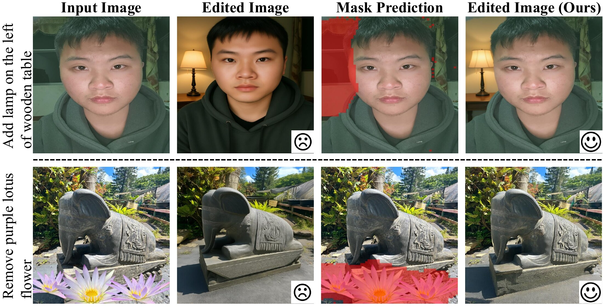
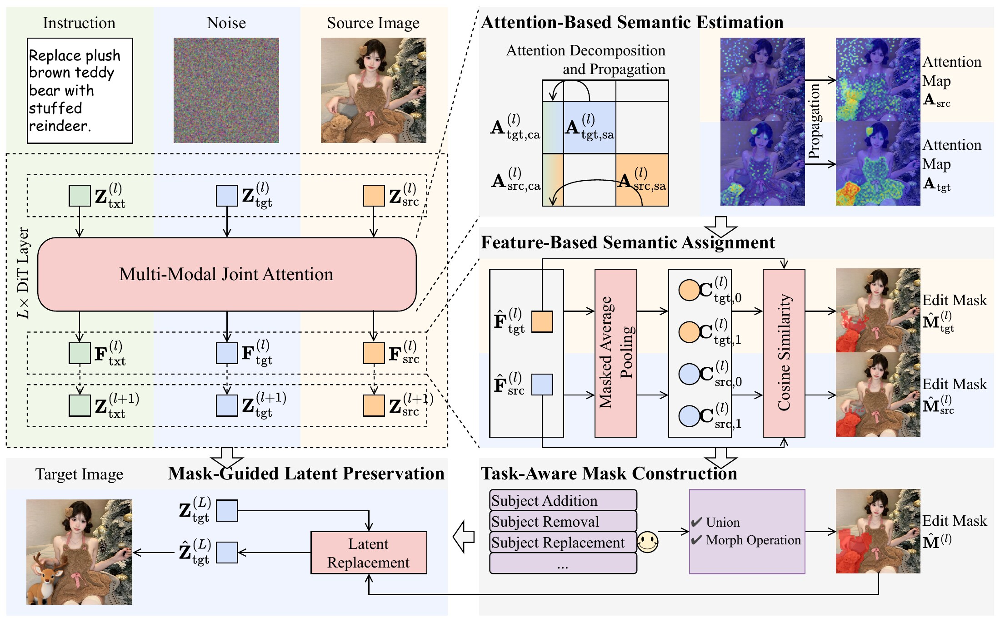
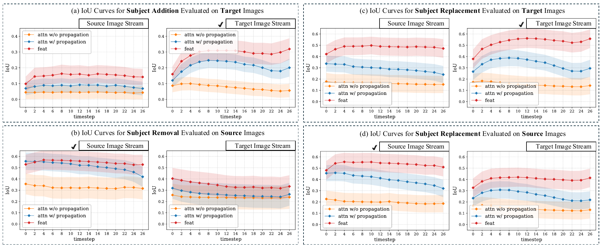
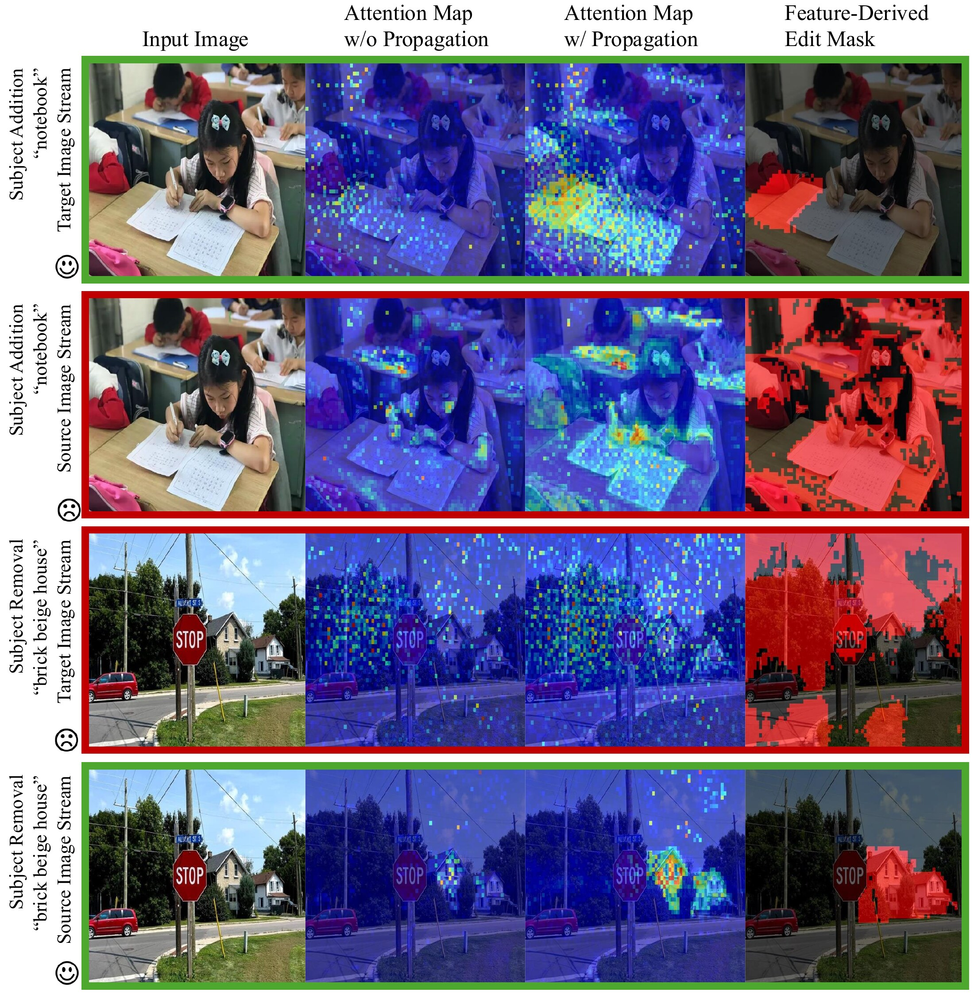
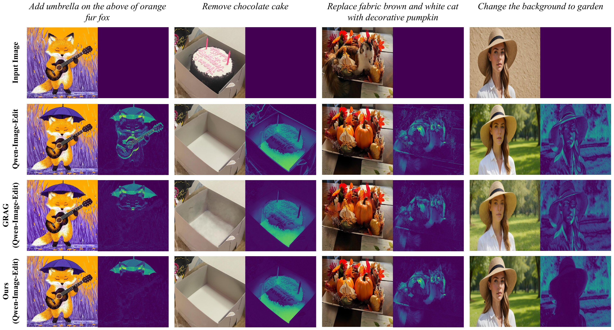

Subject addition
target stream
M̂ = M̂tgt
The new object does not exist in the source image, so its footprint appears where it emerges in the target stream.
ACM Multimedia 2026
Task-Aware Localization for Instruction-Based Image Editing

A strong base editor (Qwen-Image-Edit) follows the instruction but also changes content it was never asked to touch, such as the person's appearance or the position of the statue. Our framework predicts where the edit should happen and keeps everything else anchored to the source image.
Instruction-based image editing (IIE) aims to modify an image according to a natural language instruction. Despite recent advances in diffusion transformers, existing methods often introduce unintended changes to regions unrelated to the requested edit. We attribute this limitation to the absence of an explicit mechanism for edit localization. Different editing operations (e.g., subject addition, removal, and replacement) induce distinct spatial patterns, yet existing IIE models typically perform localization in a task-agnostic manner.
To address this limitation, we propose a training-free, task-aware edit localization framework that exploits the intrinsic source and target image streams of IIE models. For each image stream, we construct feature centroids from attention-based edit cues, and then partition tokens into edit and non-edit regions based on feature similarity. Observing that effective localization is inherently task-dependent, we introduce a unified mask construction strategy that selectively leverages the source and target streams according to the editing task. We also provide a systematic analysis of our underlying insights and design choices. Extensive experiments on EdiVal-Bench demonstrate that our framework consistently improves content consistency in non-edit regions while maintaining strong instruction-following performance on top of Step1X-Edit and Qwen-Image-Edit.
Modern DiT-based editors process text, target image tokens and source image tokens in one joint attention sequence. Edit semantics do not emerge uniformly across these streams. Where to look depends on what the instruction asks for.
target stream
M̂ = M̂tgt
The new object does not exist in the source image, so its footprint appears where it emerges in the target stream.
source stream
M̂ = M̂src
The object to erase lives in the source image, so the source stream carries the localization signal.
source∪target
M̂ = M̂tgt ∪ M̂src
Replacement couples a disappearance in the source with an emergence in the target, so both streams are combined.
Our framework plugs into a pretrained dual-stream editor at inference time. It needs no training and no extra supervision, and its runtime and memory cost stay comparable to the base model.

Using SAM 3 pseudo ground-truth masks on Qwen-Image-Edit, we measure how well each signal localizes the edit across denoising timesteps. Two patterns hold across tasks: deep latent features (red) localize more accurately than attention maps with or without propagation, and the informative stream switches with the task.

IoU of attention-derived and feature-derived masks against pseudo ground truth. Feature-based masks lead in most settings; addition is best read from the target stream and removal from the source stream.

Feature-derived masks have cleaner boundaries and fuller coverage than attention maps. The added “notebook” appears in the target stream, while the removed “brick beige house” is captured in the source stream.
We apply the framework to Step1X-Edit and Qwen-Image-Edit and evaluate on EdiVal-Bench (572 real images, nine edit types). Content consistency (CC) improves on both backbones, and instruction following (IF) is maintained or slightly improved.
| Method | Base model | EdiVal-IF ↑ | EdiVal-CC ↑ | EdiVal-O ↑ | Perceptual quality ↑ |
||
|---|---|---|---|---|---|---|---|
| Object | Background | Overall | |||||
| InstructPix2Pix | SD 1.5 | 39.34 | 77.71 | 87.79 | 82.75 | 57.06 | 7.86 |
| MagicBrush | SD 1.5 | 42.66 | 82.90 | 93.62 | 88.26 | 61.36 | 7.89 |
| UltraEdit | SD 3 | 51.57 | 83.04 | 93.57 | 88.31 | 67.48 | 7.91 |
| ICEdit | Flux.1 Fill | 53.50 | 88.21 | 93.92 | 91.07 | 69.80 | 7.91 |
| Step1X-Edit | Step1X-Edit | 59.09 | 90.73 | 97.32 | 94.03 | 74.54 | 7.86 |
| + GRAG | Step1X-Edit | 59.62 +0.53 | 91.63 +0.90 | 97.58 +0.26 | 94.60 +0.57 | 75.10 +0.56 | 7.90 +0.04 |
| + Ours | Step1X-Edit | 60.84 +1.75 | 91.77 +1.04 | 97.80 +0.48 | 94.79 +0.76 | 75.94 +1.40 | 7.86 +0.00 |
| Qwen-Image-Edit | Qwen-Image-Edit | 70.80 | 86.51 | 93.78 | 90.14 | 79.89 | 7.96 |
| + GRAG | Qwen-Image-Edit | 67.31 −3.49 | 91.17 +4.66 | 95.49 +1.71 | 93.33 +3.19 | 79.26 −0.63 | 7.96 +0.00 |
| + Ours | Qwen-Image-Edit | 71.15 +0.35 | 91.78 +5.27 | 96.96 +3.18 | 94.37 +4.23 | 81.94 +2.05 | 7.94 −0.02 |
EdiVal-IF, EdiVal-CC and EdiVal-O measure instruction following, content consistency and overall performance. Perceptual quality is a 0 to 10 naturalness score from a vision-language model. Differences are relative to each base model.
Each case shows the edited image next to its pixel-wise difference from the input. Brighter areas mean larger changes. Our difference maps concentrate on the requested region, while the base model also alters the fox, the woman's appearance and other untouched content.

@article{he2026rethinking,
title = {Rethinking Where to Edit: Task-Aware Localization for Instruction-Based Image Editing},
author = {He, Jingxuan and Wang, Xiyu and Zheng, Mengyu and Zeng, Xiangyu and Wang, Yunke and Xu, Chang},
journal = {arXiv preprint arXiv:2604.20258},
year = {2026}
}